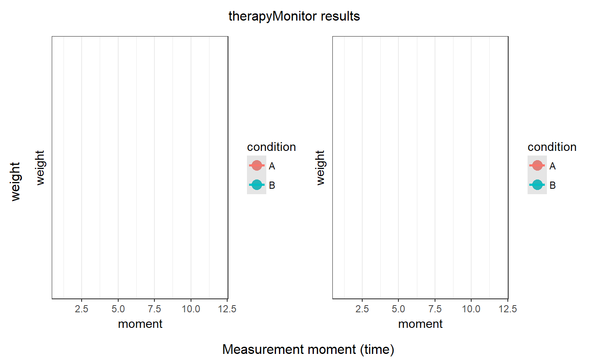

therapyMonitor & therapyMonitor.multi are useful for simple n-of-1 designs, and were written to make it easy for therapists or other practitioners to get some insight into the effects of their treatments.
therapyMonitor(dat = NULL, design="AB", statistic="|A-B|", conditionColumn = NULL, variableColumn = NULL, timeColumn = NULL, conditionMoment = NULL, limit=NULL, lines=NULL, ylab=NULL, xlab=NULL, outputFile = NULL, outputFormats = c('svg', 'png'), plotTitle = "therapyMonitor results", plotWidth=25, plotHeight=15) therapyMonitor.multi(dat = NULL, variableColumn = NULL, conditionColumn = NULL, conditionMoment = NULL, minLevels = 5, outputFiles = FALSE, outputFilePath = getwd(), outputFormats = c('svg', 'png'), silent=FALSE, ...)
| dat | A dataframe containing the variables to analyse. If not dataframe is
specified, get |
|---|---|
| design | The design to use; see |
| statistic | The statistic to use; see |
| conditionColumn | The name of the variable containing, for each measurement, the condition, or the phase of the treatment. This variable should normally only have two levels (e.g. 'A' and 'B'), indicating when the treatment changed from condition 'A' to condition 'B'. |
| variableColumn | For |
| timeColumn | The variable containing the time (datetime) of each measurement moment. If not specified in R's POSIXct format, the function tries to guess whether SPSS, SAS, or Stata timestamps were specified, and tries to convert. If the timeColumn isn't specified, the function will assume that all measurements were equidistant, and they'll simply be assigned consecutive numbers als measurement moments. |
| conditionMoment | The conditionMoment argument provides an alternative method of specifying when the condition changed; this can be the number of the first measurement in the new (second) condition/phase. For example, if the treatment started after the 6th measurement, this can be specified by passing 'conditionMoment=7'. |
| limit | The minimum number of consecutive measurements that has to be available
within one condition/phase to enable the analysis (see
|
| lines | Which lines in the |
| ylab, xlab | Labels to use when creating the plots. |
| outputFile | If not NULL, the filename to write the plot to. Note that this filename
should not include the extension - this is appended based on the
|
| outputFormats | Which format to use for the plot or plots to export. |
| plotTitle | The title for the plot. |
| plotWidth, plotHeight | The size of the plot (in centimeters). |
| minLevels | The minimum number of levels that a variable in the datafile has to have before it's included in the analyses. |
| outputFiles | Whether to export the plots and regular output to files. |
| outputFilePath | If |
| silent | Whether to suppress messages about progress etc. |
| ... | Additional arguments to |
This function started as a wrapper to the pvalue.systematic
function in the SCRT-package, but it now also does some extra
stuff.
For therapyMonitor, an object with the input and several output variables, as well as a plot. For therapyMonitor.multi, an object containing several therapyMonitor objects, as well as collated output.
### Explore and plot the weight of a chick in the ChickWeight dataset therapyMonitor(ChickWeight, variableColumn='weight', conditionMoment=6, lines=1:12);#> Warning: no non-missing arguments to min; returning Inf#> Warning: no non-missing arguments to min; returning Inf#> Warning: no non-missing arguments to max; returning -Inf#> Warning: no non-missing arguments to max; returning -Inf#> Warning: Removed 12 rows containing non-finite values (stat_smooth).#> Warning: Removed 12 rows containing missing values (geom_point).#> Warning: Removed 12 rows containing non-finite values (stat_smooth).#> Warning: Removed 12 rows containing missing values (geom_point).#> Measured variable: weight #> Condition (phase) variable: #> Observations in raw data: 578 #> Selected observations: lines 1:12 (12 observations) #> Values: A (A, 5 observations) and #> B (B, 7 observations) #> #> Testing the difference: mean of A = 58.4 (95% CI [42.39; 74.41]) #> mean of B = 149.71 (95% CI [108.91; 190.51]) #> p = 1 #> #> Regression coefficients: at A, ß = 8.1 (95% CI [6.35; 9.85]), p = .001 #> at B, ß = 20.29 (95% CI [17.58; 22.99]), p < .001